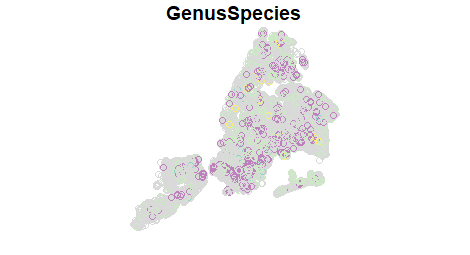

Cherry Blossoms
It’s springtime in New York and cherry trees are starting to bloom. In fact street trees right outside my house in Staten Island are bright pink in flower right now… here’s a photo I took this morning.
Google searches will reveal a few places you can go to see cherry trees with festivals dedicated to them and such. But there are lots of cherry trees along streets and in parks of NYC. As you can see in the NYC Tree Map, there are a few different species of cherry tree that are planted street trees, and if you filter by species to show a Japanese Flowering Cherry variety, you’ll see them.
Noticing the trees on my block this year, and knowing about some of our Open Data dedicated to street trees in NYC, I decided to make some of my own maps around this using R.
The Data
NYC has a robust Open Data portal. There are data from the most recent street tree census, TreesCount!, and NYC Parks keeps track of those trees and some others, with updated datasets also on OpenData. In particular, there is a Tree Points dataset that we’ll use here. This can also be joined via a unique ID to a dataset of planting spaces (noted on the webpages for the datasets). That planting spaces dataset has useful information like whether those trees are street trees or in-park trees, and whether the planting spaces are actively used. But for this work, I’ll only look at the Tree Points data, realizing it contains street trees and some, but not all in-park trees (in more landscaped areas).
We can download the data directly from with R. At the page with the data I obtained a download link by going to the ‘Export’ tab and hovering over the ‘CSV’ format - in Firefox you can see the download URL at the bottom left of the screen, and by right-clicking and selecting Copy Link Location the link will be pasted to your clipboard.

Here’s the code I used to download the data, using a simple download.file() function in base R. I just wrote the file to a high-level directory, and saved the filename with the date of the data (based on the ‘About’ tab on the OpenData page, this dataset was last updated on March 1st, 2019).
# Download the csv file from NYC OpenData (https://data.cityofnewyork.us/Environment/Forestry-Tree-Points/k5ta-2trh)
download.file("https://data.cityofnewyork.us/api/views/k5ta-2trh/rows.csv?accessType=DOWNLOAD", "D:/treepoints_20190301.csv")
Working with & Visualizing the Data in R
For this work I brought used the packages sf, dplyr, stringr, and mapview. You can install these by using install.packages("packagename") and then load the packages for use using library(packagename). Multiple packages can be installed at once using syntax like install.packages(c("packagename1", "packagename2")). Later on we'll use the packagesspatialEco,sp, andraster`, but if you’re following along I suggest not loading them until those packages are needed (I was having some issues using dplyr functions with sf objects after these and their dependencies were loaded).
To work with the data as a spatial dataset in R, I first brought the downloaded csv file into R using the base function read.csv(), and then used the sf package to convert it to a Simple Features object. From looking at the data (and the metadata, available from the OpenData ‘About’ tab) I could see the “Geometry” contained the geometry information for each tree point in the form of well-known text. A number of good descriptions are available online; the Wikipedia entry on this topic is pretty informative. Many datasets for NYC are provided in NY State Plane - Long Island Zone (EPSG 2263) - this appears to be the case for this dataset as well.
Thus, I assigned a new object, treepoints based on reading the .csv file in, and converting it to an sf (simple features) object using st_as_sf(), using the arguments as below to set the geometry based on the well-known text field, and the appropriate coordinate reference system. Below you see the use of pipes, (%>%) which are convenient ways to string functions together. (There are many good resources online about using pipes in R - if you’re not familiar with them, give a look!)
Here’s the code I used. Note - this took a few minutes for me on a decent laptop, as the treepoints dataset is quite large with almost 1 Million rows, so you might need to give it some time.
treepoints <- read.csv("D:/treepoints_20190301.csv") %>% st_as_sf(wkt="Geometry", crs=2263)
We can inspect the data as we would most datasets, using str() to view the structure of the dataset, and head() or tail() to view the first or last few rows. We can use plotting functions too. For the default plotting functions with sf objects, it will produce one plot per column. Especially with a big dataset like this it can be time consuming (and it will in fact truncate to a certain number of columns). To specify a column of data to plot for with an sf object, you can use something like: plot(sfobject[,"columnname"]). Though we’ll hold off on plotting until we have the data a bit more refined.
Based on quick inspection of the data, there are two main useful columns for this - we would generally only care about trees that are living - thus, we can filter based on the ‘TPCondition’ field to exclude dead trees, and we only want cherry trees, so we can filter based on the ‘GenusSpecies’ field. In this case, we’ll only look for species indicated as Prunus serrulata, or the Japanese Flowering Cherry. There are a few varieties of this species, noted with the data in the GenusSpecies field. The code below creates a new object, cherry, in which the data are filtered for where GenusSpecies begins with ‘Prunus serrulata’ and where the TPCondition is NOT ‘Dead’, and returns only the geometry information and the GenusSpecies field. (str_detect() is from the stringr package; the other functions are from dplyr.)
cherry <- filter(treepoints, str_detect(GenusSpecies, '^Prunus serrulata')) %>% filter(TPCondition != "Dead") %>% select(GenusSpecies)
This results in only about 35,000 observations. Thus, only the data we want, and while still large, it’s much more manageable than the data we started with. plot(cherry[,"GenusSpecies"]) will return something like the below, where the colors correspond to different varieties of Prunus serrulata.

We can also put together a pretty basic but very functional interactive map with the mapview package. Check out the package website for lots of good information. But a basic interactive map can be achieved via mapView(cherry). The code below sets up a mapview object where each variety that is listed is available as a separate layer (expand the Layers tab on the upper-left). Note, to make this map reasonable for loading the results are truncated to only show 20,000 points. (See the mapview options for more details about adjusting these types of parameters).
# Create the mapview object
mv <- mapView(cherry,zcol="GenusSpecies", burst=TRUE, legend=TRUE)
# Show the mapview object
mv
Density Map of Flowering Cherry Trees
While the above map is neat, allowing easy one to zoom in easily across the map and see individual trees, it can be a bit overwhelming with so many points. Thus, we can use a kernel density surface to create a smoothed, continuous surface of “hotspots”. In my opinion this is nicer looking and interpretable - essentially the brighter areas are, the more likely people are to encounter flowering cherry trees. You’ll see there are generally some flowering cherry trees throughout the city, but there are major hotspots out in Queens - in particular, look between JFK Airport and the Belt Parkway. Also, even in areas that don’t generally have a lot of flowering cherry trees, sometimes there are significant stretches of them - look along Park Ave. on the Upper East Side. (See below for more detail on making this.)
Here I used the function for creating a simple kernel density estimate in 2-dimensions using the spatialEco package, function sp.kde. Though there are more scientific ways to select an appropriate bandwidth, I’ve experimented with different bandwidth and think a bandwidth of 2,000 ft. might give users useful information in terms of density of flowering cherry trees and settled on 2000 ft in this case. As you’ll see in the code below, I also created a blank raster object for the extent of the NYC borough boundaries, with 100 ft pixels. This involved pulling in the NYC Borough boundaries as an sf object directly from NYC OpenData using the download URL (data available here) and reprojecting to the same coordinate system as the tree data.
# Load necessary packages
library(raster)
library(spatialEco)
library(sp)
# Load the borough boundaries from OpenData and transform to appropriate CRS (from Lat/Long WGS84 [EPSG 4362])
boroughs <- st_read("https://data.cityofnewyork.us/api/geospatial/tqmj-j8zm?method=export&format=GeoJSON") %>% st_transform(crs=2263)
# Create raster representing the extent of the borough boundaries at 100 ft. resolution.
boroughs.r <- raster(xmn=st_bbox(boroughs)["xmin"], xmx=st_bbox(boroughs)["xmax"],ymn=st_bbox(boroughs)["ymin"], ymx=st_bbox(boroughs)["ymax"], crs=2263, resolution=100)
# Convert the sf object to an sp object, required by the kde function
cherry.spdf <- as(cherry, 'Spatial')
# Create the Kernel Density surface.
cherry.kde <- sp.kde(x = cherry.spdf, bw = 2000, standardize = TRUE, newdata = boroughs.r)
# Plot using plot(cherry.kde)
Check out the help for spatialEco::sp.kde()) for more detail on the options. In this case I used an unweighted KDE, but KDE could have been weighted based on things like condition, size, etc. to give higher importance to different trees.